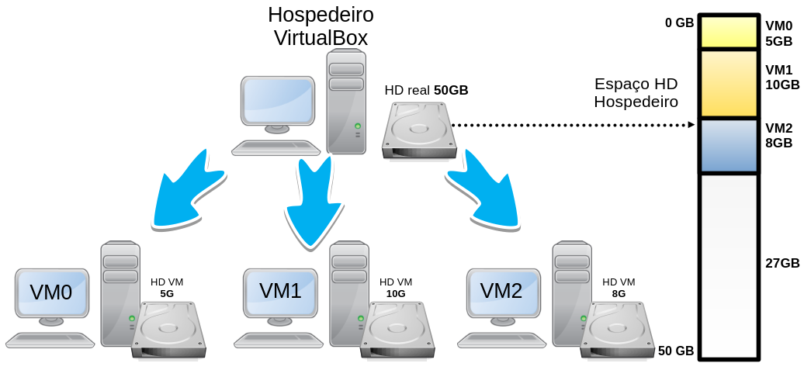
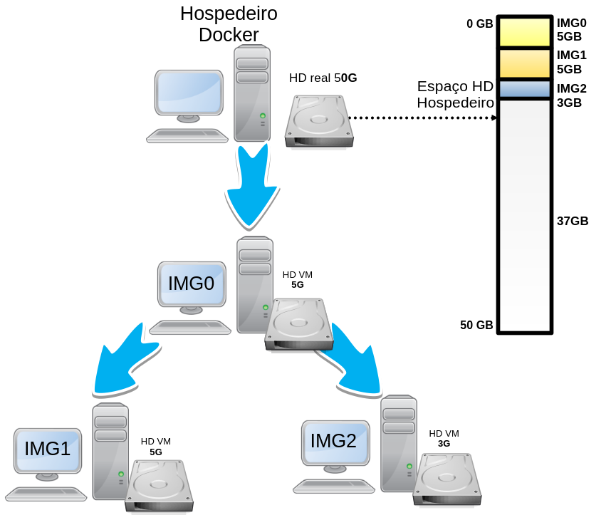
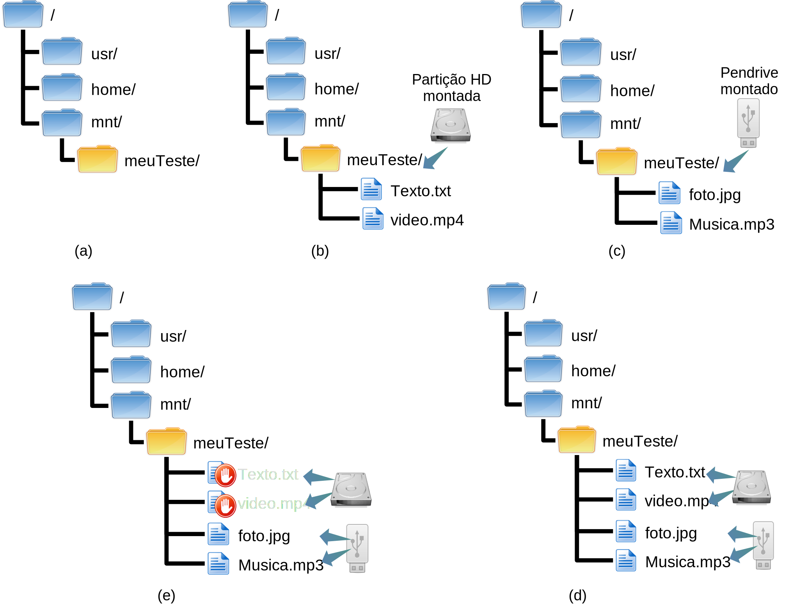
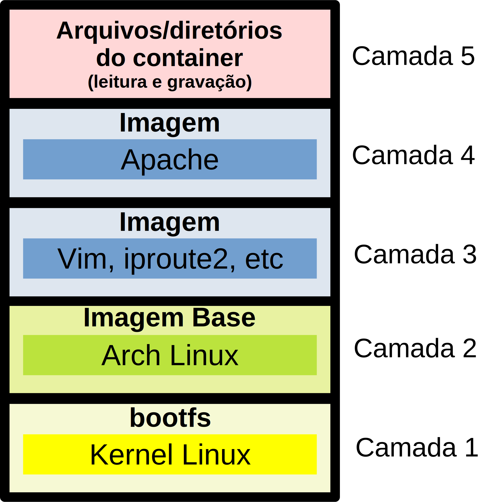
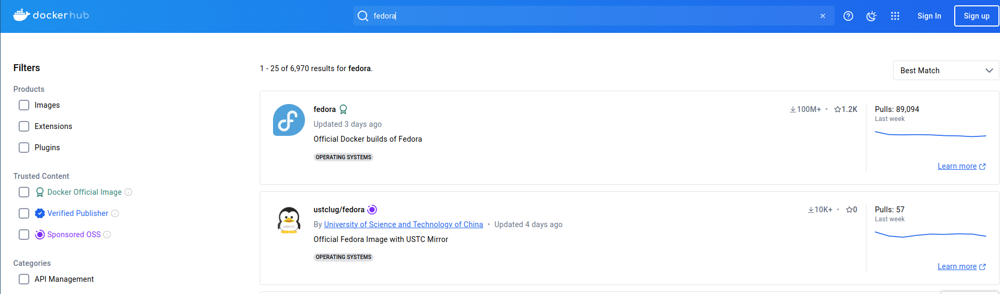
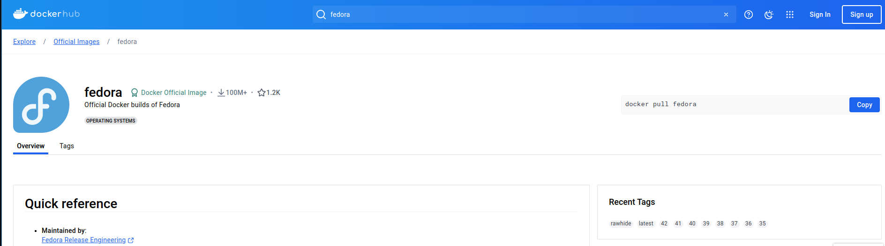
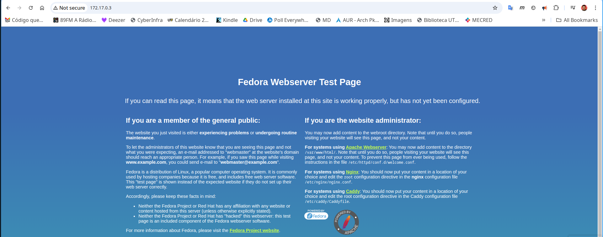
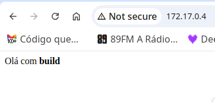

Imagens
No texto a respeido de Container, foi apresentado o conceito de container, que é
onde os aplicativos/serviços que estão sendo providos via Docker
efetivamente são executados. Todavia, já foi citado que o
container é criado utilizando-se imagens. Por exemplo, no comando:
“docker run -i -t ubuntu /bin/bash”, o parâmetro “ubuntu” representa
a imagem que serve de base para a criação do container Docker. Assim,
neste texto, vamos entender o que é uma imagem, como ela é utilizada
pelo container, quais são as vantagens do uso das imagens Docker, bem
como criar e gerenciar imagens Docker.
Em resumo, uma imagem Docker, nada mais é do que uma camada de sistema de arquivos, que pode ser empilhada uma sobre a outra. Ou seja, inicialmente podemos pensar na imagem Docker, como sendo o sistema de arquivos que utilizaremos dentro do container Docker, tal como uma imagem ou HD virtual de VM completa (ex. VM do VirtualBox ou VMWare). Entretanto, é preciso ter em mente que há uma grande diferença entre uma imagem Docker e uma imagem de VM completa.
Por exemplo, imagine que criamos uma VM completa, utilizando VirtualBox, nesta VM instalamos o Arch Linux para ser o SO (Sistema Operacional), vamos chamar essa VM de VM0, e tal VM servirá de base para a criação de duas outras VMs. Desta forma, clonamos duas vezes a VM0 e criamos agora a VM1 e VM2 (ver Figura 1). Sendo que, na VM1 instalaremos o MariaDB para ser nosso banco de dados. Já na VM2, instalaremos o HTTP Apache.
Neste exemplo anterior, utilizando virtualização completa (full virtualization), perceba que agora temos três VMs e cada uma tem um HD virtual independente, no qual está instalado o sistema de arquivo, que é a base do Arch Linux. Tais HDs virtuais, na verdade, são arquivos do computador hospedeiro, esses arquivos normalmente têm alguns gigabytes de tamanho. Continuando o exemplo, vamos supor que o HD da VM0 tem 5GB, ai clonamos ele para criar a VM1 que por ser um clone da VM0 já tem 5GB, somado a mais 5GB do MariaDB, o que totaliza um uso de 10GB do HD virtual. Já para VM2, temos os 5GB iniciais do Arch (que já veio de “herança”) e vamos imaginar que foram instalados e armazenados mais uns 3GB de dados, então teremos o HD virtual da VM2 com 8GB. Assim sendo, neste exemplo temos três HDs virtuais com 5GB, 10GB e 8GB, o que totaliza 23GB que são consumidos por esses HDs virtuais do HD real da máquina hospedeira, tal como ilustrado na Figura 1. Concluindo esse exemplo, em um sistema de virtualização completa, cada VM tem um HD completo e isolado, não importa se isso veio de uma cópia/clone de outra VM, a nova VM será um sistema único ocupando os recursos do hospedeiro de forma completa e exclusiva.

Os espaços citados no exemplo para :Arch Linux, MariaDB e Apache HTTP, são meramente ilustrativos, ou seja, não correspondem ao mundo real.

Todavia, o conceito de imagem utilizada no Docker é ligeiramente diferente do utilizado normalmente em sistemas de virtualização completa. Desta forma, podemos até pensar nas imagens Docker como se fossem HDs virtuais, mas é mais correto chamar de sistema de arquivos (vamos fazer isso a partir de agora). Assim, é possível criar um sistema de arquivos base e ir acoplando/sobrepondo outros sistemas de arquivos, sendo que neste contexto cada sistema de arquivos vai ser uma nova imagem e então teremos imagens sobrepostas.
Portanto, se pegarmos o mesmo exemplo anterior, só que utilizando imagens Docker, o cenários ficaria da seguinte forma: teríamos a imagem Arch Linux, que chamaremos de IMG0, com 5GB, que serviria de base para a criação da IMG1 e IMG2. Tais imagens são respectivamente equivalentes à VM0, VM1 e VM2. Então, pegamos de base a IMG0, instalamos o MariaDB e criamos a IMG1. Da mesma forma, pegamos a IMG0 de base, instalamos o Apache HTTP e criamos a VM2. Só que fazendo isso com imagens Docker, vai haver uma grande diferença quando comparado ao exemplo anterior com o VirtualBox, pois a IMG0 utiliza 5GB. Na IMG1, com a instalação do MariaDB e dados, tal imagem consumirá apenas 5GB no total e não 10GB (do exemplo com virtualização completa). Por fim, a IMG2 terá somente 3GB no total (e não 8GB), tal como ilustra a Figura 2. Ou seja, todas as imagens (IMG0, IMG1 e IMG2), consumirão da máquina hospedeira apenas 13GB de espaço em disco e não 23G, como foi feito utilizando o VirtualBox, sendo que isso é possível graças ao conceito de UFS (Union File System).

Union File System - union mount
Para compreender como as imagens Docker funcionam é necessário entender o conceito de UFS (Union File System), comumente chamado de union mount.
Para falar de union mount é necessário primeiro lembrar que montar
(mount) em ambientes Like-Unix, significa disponibilizar em um
diretório do sistema, o conteúdo de partições de HDs, SSDs, pendrives,
DVDs, etc. Assim, quando se monta uma partição de um HD, por exemplo no
diretório /mnt/meuTeste, o conteúdo desta partição (arquivos e
diretórios) aparecerão dentro do diretório /mnt/meuTeste. A Figura 3-a
apresenta o diretório /mnt/meuTeste, sem nenhum conteúdo (diretório
vazio) antes da montagem. Já a Figura 3-b, mostra o diretório
/mnt/meuTeste após a montagem da partição de um HD, neste caso tal
diretório apresenta conteúdo da partição do HD, que são os arquivos
Texto.txt e video.mp4.
<!--

-->
É muito importante saber, que se já houvesse algum conteúdo dentro de
/mnt/meuTeste, antes da montagem, tal conteúdo ficaria oculto,
indisponível e intocável durante todo o tempo que tal diretório
permanecer montado. Desta forma, se enquanto o conteúdo da partição do
HD estiver montada em /mnt/meuTeste e posteriormente for montada o
conteúdo de um pendrive no mesmo diretório /mnt/meuTeste, tudo que
for feito no diretório /mnt/meuTeste afetará somente os arquivos do
pendrive, pois o conteúdo da partição do HD estará oculta e protegida
pelo processo de montagem. A Figura 3-c mostra como ficará aos olhos do
usuário o conteúdo do diretório /mnt/meuTeste, quando montando o
conteúdo de um pendrive no mesmo diretório onde já estava montada a
partição do HD. Já a Figura 3-d, apresenta que na verdade o conteúdo do
HD ainda está associado ao diretório, mas o mesmo não fica acessível
enquanto o pendrive permanecer montado. Todavia, quando o conteúdo da
partição do HD volta a aparecer no diretório /mnt/meuTeste, asim que o
pendrive for desmontado, como se nada houvesse acontecido.
<!--

-->
A diferença do union mount para o mount tradicional, é que o union
mount permite montar vários sistemas de arquivos em um ponto de
montagem (diretório), deixando o conteúdo de todos esses sistemas de
arquivos disponíveis simultaneamente. Ou seja, utilizando o union
mount é possível montar, o conteúdo de uma partição de HD no diretório
/mnt/meuTeste, mas agora se for montado o conteúdo de um pendrive no
mesmo diretório (/mnt/meuTeste), ficará visível e acessível tanto o
conteúdo da partição do HD, quanto o conteúdo do pendrive, desta forma
o usuário deste sistema poderia trabalhar em ambos dispositivos de
armazenamento (pendrive e partição do HD) simultaneamente no mesmo
diretório (o que não era possível no mount tradicional). A Figura 3-e,
apresenta esse comportamento do union mount. É importante entender
aqui, que caso exista arquivos com o mesmo path, por exemplo
/texto.txt na partição do HD e um arquivo /texto.txt no pendrive,
ficará acessível apenas o arquivo do dispositivo que foi montado por
último. <!--

-->{=html}

Para realizar um union mount no Linux, é possível utilizar,
por exemplo, o unionfs, tal como:
# unionfs -o cow teste1/=RW:teste2/=RO testeTodos/Neste exemplo, o conteúdo dos diretórios teste1/ e
teste2/ são montados dentro de testeTodos/,
tudo que for alterado em testeTodos/ será gravado em
teste1/, que foi definido com permissão de leitura e
gravação (RW).
O Docker suporta várias implementações do mount union, tais como:
AUFS, Overlay, devicemapper, BTRFS e ZFS. A implementação utilizada por
cada Docker pode ser vista com o comando docker info, na saída procure
por Storage Driver, tal como:
$ docker info | grep -i "storage driver"
Storage Driver: overlay2
Na saída anterior, a máquina na qual o comando foi executado, está utilizando o Overlay para tecnologia UFS, ou seja, para realizar union mount.
Agora, sabendo como funciona o UFS ou union mount, podemos dizer que o Docker utiliza tal técnica para agregar imagens e assim economizar espaço em disco, bem como facilitar a distribuições e escalabilidade dessas imagens, o que torna o Docker muito eficiente em comparação com sistemas de virtualização completos (ex. VirtualBox, VMWare, etc).
Desta forma, utilizando UFS, os containers Docker normalmente têm várias camadas de imagens, visando compor o container final de forma mais prática e eficiente. Veja na Figura 4 como poderia ser composta as camadas de imagens de um container, bem como a descrição dessas no texto a seguir:
- A primeira camada, ou seja imagem, será o sistema de arquivos de boot, conhecido como bootfs. De forma simplista, vamos imaginar que nesta imagem está apenas o kernel Linux;
- A próxima camada será, por exemplo, a base de alguma distribuição Linux, tal como o Arch, Ubuntu, CentOS, etc;
- Na sequência poderia ter uma camada com as ferramentas/comandos que
o administrador acha que deve ter em todos os container, tais como:
vim,iproute2,tcpdump,htop, etc; - Depois, pode vir o serviço que se espera daquela imagem, tal como o Apache HTTP;
- Por fim, viria a camada na qual o container pode gravar/alterar arquivos/diretórios.

Levando em consideração o exemplo da Figura 4, note que a primeira camada (Camada 1 da Figura 4) é o kernel, que na verdade é compartilhado com o sistema hospedeiro. Já a Camada 2. Desta forma, o kernel sempre será compartilhado do hospedeiro com todos os containers, já a distribuição Linux pode ser qualquer uma (a gosto do administrador). Após o kernel e a base da distribuição, normalmente começam a surgir várias camadas, conforme a necessidade/estratégia do administrador do sistema, por exemplo, caso ele queira que determinadas ferramentas estejam em todos os containers derivados, ele pode instalar tais ferramentas neste momento, tal como foi feito na Camada 3. Ainda seguindo o exemplo, a próxima camada (Camada 4) contém a instalação do Apache HTTP, então essa imagem provavelmente é de um servidor HTTP, que poderia por exemplo, receber mais imagens, para formar servidores PHP, JSP, JavaScript, etc. Da mesma forma, o administrador, poderia pegar a partir da Camada 3 e adicionar uma imagem para um servidor de banco de dados, etc. Já no topo das imagens, quando o container for iniciado, vai ficar uma imagem com permissão de leitura e gravação, que será o espaço no qual os arquivos criados ou alterados pelo container serão armazenados, essa técnica chama-se CoW (Copy-on-Write), ver Camada 5 da Figura 4. Lembrando que aqui estamos apresentando só um exemplo de como poderiam ser organizadas as camadas, ou seja, cada imagem de container pode seguir uma ordem de sequência de imagem diferente.
CoW (Copy-on-Write)
No conceito de Copy-on-Write, todas as imagens abaixo da última, estarão com permissão de somente leitura (RO), isso vai proteger a imagem de alterações e garantir que a imagem é a mesma para todos que a utilizarem. Já a última camada, tem permissão de leitura e gravação (RW). Desta forma, arquivos novos são gravados nesta imagem, da mesma forma, se algum arquivo das imagens a baixo forem alterados, será criado uma cópia deste arquivo na imagem superior, que então ocultará o arquivo da imagem original e apresentará para o sistema/usuário apenas o arquivo alterado que agora está na imagem com permissão de leitura e gravação. O CoW trabalha em conjunto com a técnica de union mount, explicada anteriormente.

O union mount permite montar várias imagens de forma que todas fiquem acessíveis simultaneamente em um mesmo ponto de montagem (diretório), só que normalmente apenas a última imagem é que terá permissão de gravação e escrita, já as camadas abaixo dessa terão permissão apenas de leitura. Quando algum arquivo/diretório de uma camada abaixo precisar ser alterado/escrito, a técnica de CoW copiará tal arquivo alterado para a última imagem, que normalmente representa o container. Isso garante a integridade dos arquivo para containers que utilizam as mesmas imagens e da mesma forma permite que o container tenha a capacidade de alterar completamente e livremente a estrutura de arquivos e diretórios ele está trabalhando.
Então containers mantém as alterações realizadas no sistema de arquivos deles, permitindo assim salvar por exemplo configurações referentes aquele container (ex. IP, rota padrão, usuários, etc), bem como alterações realizadas por aquele container em arquivos que inicialmente eram da imagem, mas que agora fazem parte daquele container. Já a imagem utilizada para criar o container fica intocada, pois uma imagem Docker é imutável.
Agora sabendo como funcionam as imagens Docker e quais são as técnicas empregadas nessas imagens, vamos abordar como utilizar e configurar tais imagens na prática.
Listando imagens (images)
Para listar as imagens disponíveis no próprio host hospedeiro, é
possível utilizar o comando docker images, tal como:
$ docker images
REPOSITORY TAG IMAGE ID CREATED SIZE
ubuntu latest 35a88802559d 2 months ago 78MB
luizarthur/cyberinfra routerDeb11 28b009432f01 4 months ago 391MB
luizarthur/cyberinfra hostDeb11 da504d85c4c9 4 months ago 278MB
debian 11 57a92962dbeb 4 months ago 124MB
archlinux latest 0cda8061254a 5 months ago 436MB
A saída da listagem de imagens apresentada no exemplo anterior, mostra as imagens por linhas, sendo que cada coluna apresenta as seguintes informações:
REPOSITORY: é o repositório de onde a imagem foi derivada;TAG: é um nome para identificar/nomear o repositório, isso pode por exemplo ajudar a controlar versões;IMAGE ID: identificador único da imagem, em nível global (é um hash);CREATED: informa a data que a imagem foi criada;SIZE: tamanho da imagem - quanto ela ocupa no disco.
As imagens ficam armazenadas normalmente dentro do diretório
/usr/lib/docker, sendo que dentro deste diretório as imagens devem
estar dentro dos subdiretórios overlay2, aufs, btrfs, dentre
outros, dependendo o tipo de armazenamento Docker utilizado.
Por exemplo, o conteúdo do diretório /var/lib/docker/, do host a
seguir é:
# ls /var/lib/docker/
buildkit containerd containers engine-id image network overlay2 plugins runtimes swarm tmp trust volumes
Dentro do subdiretório /var/lib/docker/overlay2/ ficará as camadas das
imagens utilizadas no Docker (neste caso o host utiliza o overlay2),
então um exemplo de saída deste diretório seria:
# ls /var/lib/docker/overlay2/
00b33f7e6620ec4c3b874db4dbdac73e4ac79b3ba28414376be5641182c1381e 9b41a116168f228375439a9a3cd637171657966d91a1322df6ec8ec41778663c
032c162f754771188907fdb019c3e48df5965e05dd05100b08f999b644e266fb 9b41a116168f228375439a9a3cd637171657966d91a1322df6ec8ec41778663c-init
046c72f791a385eff6aea070a3acd52a47b9b8b815a82ee71436e1278a6e3d5d 9f9d469612856b3ba95bd9257b971b8bb821457c862c50c4f11353f9e7510452
046c72f791a385eff6aea070a3acd52a47b9b8b815a82ee71436e1278a6e3d5d-init a4da83df821bbaaa6f2833864b3cf765713a2919039547966283bb5e4e1f5541
...
Já o diretório /var/lib/docker/image/ contém metadados a respeito das
imagens. No exemplo a seguir é possível ver que o host têm como
subdiretório de image um diretório chamado overlay2, que por sua vez
tem diretórios e arquivos com os dados a respeito das imagens:
# ls /var/lib/docker/image/
overlay2
# ls -l /var/lib/docker/image/overlay2/
total 16
drwx------ 4 root root 4096 Jun 21 2021 distribution
drwx------ 4 root root 4096 Jun 21 2021 imagedb
drwx------ 5 root root 4096 Jun 21 2021 layerdb
-rw------- 1 root root 2214 Aug 13 11:20 repositories.json
A princípio, tais arquivos não devem ser editados manualmente, pois são mantidos de forma automática pelo próprio Docker.
Os arquivos dos containers ficam normalmente no diretório
/var/lib/docker/containers/.
De onde vêm as imagens Docker?
Estamos falando das imagens Docker, mas como fazer ou obter uma imagem Docker?
A reposta é: “você pode fazer a sua própria imagem, ou baixá-las de algum repositório”.
Então há basicamente duas formas obter e utilizar imagens Docker, que são:
-
Obtendo imagens de repositórios, tais como o Docker Hub. Neste exemplo o Docker Hub, é um repositório para imagens Dockers, no qual é possível compartilhar, armazenar e distribuir imagens Dockers utilizando, repositórios públicos ou privados;
-
Criando sua própria imagem. Para criar-se uma imagem, normalmente é utilizada imagem pré-existente geralmente obtida de um repositório. É claro que é possível criar uma imagem Docker do zero, sem utilizar outra imagem pré-existente, todavia uma das grandes vantagens do Docker é justamente poder reutilizar imagens já criadas, o que torna tudo muito mais fácil.
É necessário observar que o conceito de repositórios de imagens Docker são um grande atrativo para o uso do Docker, pois torna-se muito fácil criar, gerenciar e distribuir imagens. Dada essa afirmação/constatação, não faz muito sentido não utilizar os repositórios. Assim, o texto a seguir mescla a criação de imagens manualmente com o uso de repositórios, já que isso é o mais natural dentro do mundo Docker.
Procurando imagens no Docker Hub (search)
O Docker Hub é similar ao GitHub, só que o GitHub é uma plataforma que mantém códigos-fonte, ou seja, repositórios de projetos de programação. Já o Docker Hub faz a mesma coisa, só que com imagens Dockers, que podem ser simplesmente a imagem de um Linux básico (que serve de base para outras imagens) ou de imagens mais complexas contento por exemplo um sistema completo de uma empresa.
Ainda comparando o GitHub com o Docker Hub, uma das grandes vantagens de se disponibilizar um projeto de software via Docker Hub e não GitHub, é que quem baixar a imagem já tem o ambiente completo e funcional para executar tal projeto. O que não acontece no GitHub, pois nesse é necessário geralmente, baixar o projeto, resolver as dependências (instalar softwares e bibliotecas necessários para o projeto) e só então tentar executá-lo. É claro que na prática, o objetivo do GitHub e do Docker Hub são diferentes (eles não competem entre-si), na verdade um complementa o outro.
Há outros repositórios similares ao Docker Hub, tais como: Quay, Google Container Registry - GCR, Amazon Elastic Container Registry - ECR, Azure Container Registry - ACR, GitLab Container Registry e Harbor. Todavia neste texto vamos nos concentrar no Docker Hub.
Assim, para obter imagens do Docker Hub é possível pesquisar por essas no sítio Web do Docker Hub (https://hub.docker.com/search). A Figura 5 ilustra a busca por imagens Dockers relacionadas com “Fedora” na tentativa de encontrar uma imagem do Fedora Linux.

Já a Figura 5 mostra as informações do repositório Docker escolhido após a busca anterior.

Além de realizar a busca direta no sítio Web, também é possível realizar
tal busca utilizando o comando docker search seguido do termo de
busca. No exemplo a seguir buscamos novamente por “fedora”, só que agora
via console:
# docker search fedora
NAME DESCRIPTION STARS OFFICIAL
fedora Official Docker builds of Fedora 1213 [OK]
ustclug/fedora Official Fedora Image with USTC Mirror 0
srcml/fedora Build, package, and test srcml on Fedora 0
mdsplus/fedora 0
kasmweb/fedora-39-desktop Fedora 39 desktop for Kasm Workspaces 0
kasmweb/fedora-40-desktop Fedora 40 desktop for Kasm Workspaces 1
Obtendo imagens do Docker Hub (pull)
Bem, depois de encontrar a imagem via sítio Web ou repositório, é
possível obter essa imagem Docker realizando um docker pull. Note que
na Figura 5, via sítio Web, que há uma opção para já copiar (copy) o
comando necessário para baixar a imagem do fedora encontrada, então
vamos executar tal comando:
$ docker pull fedora
Using default tag: latest
latest: Pulling from library/fedora
f7bb57d05c2a: Pull complete
Digest: sha256:b7b4b222c2a433e831c006a49a397009640cc30e097824410a35b160be4a176b
Status: Downloaded newer image for fedora:latest
docker.io/library/fedora:latest
A saída do comando anterior mostra que a imagem Docker, foi do Docker
Hub com sucesso. Para constatar isso podemos pedir para listar as
imagens, e lá deve aparecer uma linha do repositório do fedora, tal
como:
$ docker images
REPOSITORY TAG IMAGE ID CREATED SIZE
fedora latest 9146ee7fcff0 3 days ago 222MB
ubuntu latest 35a88802559d 2 months ago 78MB
luizarthur/cyberinfra routerDeb11 28b009432f01 4 months ago 391MB
...
Depois de obter a imagem é possível utilizá-la, por exemplo iniciando um container, tal como já fizemos nos textos anteriores:
$ docker run --name meuFedora -ti fedora /bin/bash
[root@19bad3150dfa /]# yum --version
4.19.0
Installed: dnf-0:4.19.0-1.fc40.noarch at Sun Apr 14 22:54:24 2024
Built : Fedora Project at Thu Feb 8 16:33:42 2024
Installed: rpm-0:4.19.1.1-1.fc40.x86_64 at Sun Apr 14 22:54:24 2024
Built : Fedora Project at Wed Feb 7 15:55:53 2024
[root@19bad3150dfa /]# uname -a
Linux 19bad3150dfa 6.10.6-arch1-1 #1 SMP PREEMPT_DYNAMIC Mon, 19 Aug 2024 17:02:39 +0000 x86_64 GNU/Linux
[root@19bad3150dfa /]#
No comando anterior, ligamos um container chamado meuFedora com a
imagem do Fedora Linux, que obtivemos anteriormente. Nesta foi executado
o comando yum o que mostra que estamos em um ambiente que utiliza
ferramentas de instalação do Fedora, mesmo estando em um host que é
Arch Linux (ou seja, não tem yum).
Criando imagens (commit e build)
Como vimos anteriormente é possível obter uma imagem existente de um repositório, tal como o Docker Hub, todavia em algum momento será necessário modificar a imagem para que essa atenda necessidades específicas de empresas ou pessoas. Neste caso há duas formar de criar imagens:
docker commit, sendo que este método cria uma imagem a partir de um container existente. Tal método permite que se faça alterações manuais dentro do container (interagindo com obash, por exemplo). Após todas as alterações necessárias, o administrador salvará o estado atual desse container, gerando uma nova imagem;docker build, nesta forma a imagem será criada a partir das instruções contidas em um arquivo chamado Dockerfile, tal arquivo é basicamente um script que contém sequências de instruções para configurar a imagem Docker.
Note que o commit a principio pode ser mais simples que o build,
todavia ele não documenta as alterações feitas na imagem, isso
compromete o registro das alterações da imagem e pode atrapalhar o
gerenciamento da imagem. Já o build, inicialmente é mais complexo,
pois exige que o administrador do sistema compreenda os comandos do
arquivo Dockerfile, mas a longo prazo o gerenciamento dessas imagens
ficam mais simples. Desta forma, o método mais recomendado para criar
imagem é o build.
Criando imagens com o commit
Vamos iniciar criando imagens utilizando o commit, pois isso é mais
intuitivo a principio. Desta forma, espera-se que tenhamos um container
em execução e que vamos alterar coisas dentro desse container (na imagem
dele) e depois vamos salvar essa imagem alterada.
Então como exemplo, vamos iniciar um container e depois vamos instalar alguns pacotes nele, tal como:
$ docker run --name meuFedoraApache -ti fedora /bin/bash
[root@f768497f72b7 /]# dnf update
...
[root@f768497f72b7 /]# dnf install httpd
...
[root@f768497f72b7 /]# dnf install net-tools
...
[root@f768497f72b7 /]# /usr/sbin/httpd
No container anterior, utilizamos a imagem do fedora para iniciar um
container chamado meuFedoraApache, depois utilizando o comando dnf,
realizamos uma atualização do sistema e em seguida instalamos os pacotes
httpd e net-tools, esses respectivamente são: o servidor Apache HTTP
e alguns comandos de rede (ifconfig, netstat, etc). Por fim,
iniciamos o httpd que acabamos de instalar.
Não precisaria instalar o net-tools para o Apache
funcionar, isso só foi feito para poder ver o IP do container e se o
Apache está em execução com o netstat.
Com esses passos podemos ver o servidor HTTP em execução no container em questão (veja o IP do container e digite esse em seu navegador Web).
Agora, com o container já configurado da forma que esperávamos, vamos gerar uma imagem a partir desse container. Para isso precisamos abrir outro terminal (não no terminal do container) e executar:
$ docker commit meuFedoraApache servidor/fedora_apache
sha256:8bcfdd9d6660954b2645e72185fb086071e1aeca519c93b3bd50aa6b0b363ff7
No exemplo que estamos seguindo, utilizamos o container
meuFedoraApache, para criar uma imagem chamada
servidor/fedora_apache. Tal imagem agora pode ser vista na lista de
imagens que temos localmente, tal como:
$ docker images
REPOSITORY TAG IMAGE ID CREATED SIZE
servidor/fedora_apache latest 8bcfdd9d6660 5 minutes ago 512MB
fedora latest 9146ee7fcff0 3 days ago 222MB
ubuntu latest 35a88802559d 2 months ago 78MB
luizarthur/cyberinfra routerDeb11 28b009432f01 4 months ago 391MB
...
Agora podemos utilizá-la para por exemplo iniciar um novo container com um servidor Apache em execução, tal como:
$ docker run --rm --name servidorFedApache -d servidor/fedora_apache /usr/sbin/httpd -DFOREGROUND
4d76b05803d3757975f58199b97c023240763577884bec435d6fc1eec6bd6784
Então o comando anterior, executa um container chamado
servidorFedApache, a partir da imagem servidor/fedora_apache (que
criamos via commit) e executa o servidor HTTP
(/usr/sbin/httpd -DFOREGROUND).
Note que foi necessário utilizar a opção -DFOREGROUND,
para o container não terminar devido ao Apache executar em plano de
fundo.
Após isso podemos ver tal container em execução:
$ docker ps
CONTAINER ID IMAGE COMMAND CREATED STATUS PORTS NAMES
4d76b05803d3 servidor/fedora_apache "/usr/sbin/httpd -DF…" 2 seconds ago Up 1 second servidorFedApache
f768497f72b7 fedora "/bin/bash" 48 minutes ago Up 20 minutes meuFedoraApache
Também podemos ver o IP desse container e acessá-lo via navegador Web, tal como:
$ docker inspect servidorFedApache | grep -i \"IPAddress
"IPAddress": "172.17.0.3",
Depois seria só inserir o IP do container no navegador, tal como http://172.17.0.3 e deve ser possível ver uma página Web, tal como apresentado na Figura 7.

É importante observar que durante o commit o container
que serve de base estava em execução.
Criando imagens com o build
Vimos anteriormente que o commit pode ser utilizado para criar uma
imagem, todavia atualmente recomenda-se utilizar o build, já que esse
é considerado uma prática melhor, pois permite analisar as diferenças
entre as imagens, já que mantém um arquivo com os passos executados para
alterar a imagem. Desta forma é importante entender como funciona o
build e o arquivo Dockerfile.
Dockerfile
Então a base para se criar uma imagem com o build é entender o
Dockerfile e sua estrutura. Desta forma para entender a estrutura básica
deste arquivo vamos replicar o que foi feito na imagem anterior (quando
foi utilizado o commit).
Para isso vamos criar um diretório, tal como:
$ mkdir buildApache
$ cd buildApache/
$ vi Dockerfile
Então anteriormente (comandos), foi criado um diretório chamando
buildApache, entramos dentro deste diretório (cd) e por fim
executamos o editor de texto vi (fique a vontade para utilizar outro
editor de texto) para criar/editar o arquivo chamado Dockerfile. Para
este exemplo o conteúdo deste arquivo será:
FROM fedora
MAINTAINER Luiz Arthur "luizsantos@utfpr.edu.br"
RUN dnf update -y
RUN dnf install httpd net-tools -y
RUN echo "Olá com <b> build" > /var/www/html/index.html''
As instruções contidas neste arquivo de exemplo foram:
FROM: indica a imagem base, na qual essa nova imagem será gerada;MAINTAINER: informa o autor da imagem e seu e-mail;RUN: Executa comandos na imagem atual.
Então o principal neste arquivo de exemplo, é que a imagem é baseada no
fedora, e são executados três comandos, sendo esses: atualiza o
fedora, instala do httpd e net-tools (o -y é para responder sim
a todas as perguntas do dnf, já que não há interação do usuário com
este tipo de procedimento) e por fim, neste exemplo, criamos um
index.html para diferenciar essa imagem da anterior (criada com o
commit).
Lembrando que principalmente nesta imagem não precisaria instalar o
net-tools, isso foi feito aqui só para manter
compatibilidade entre os exemplos.
Feito o Dockerfile, agora é possível executar o docker build e criar
efetivamente a imagem, tal como:
$ docker build -t="servidor/build_fedora_apache" .
DEPRECATED: The legacy builder is deprecated and will be removed in a future release.
Install the buildx component to build images with BuildKit:
https://docs.docker.com/go/buildx/
Sending build context to Docker daemon 2.048kB
Step 1/5 : FROM fedora
---> 9146ee7fcff0
Step 2/5 : MAINTAINER Luiz Arthur "luizsantos@utfpr.edu.br"
---> Running in 8acec3282bb9
---> Removed intermediate container 8acec3282bb9
---> 6e988b94e803
Step 3/5 : RUN dnf update -y
...
Complete!
---> Removed intermediate container 168523b0e76d
---> 60e824a461ec
Step 5/5 : RUN echo "Olá com <b> build" > /var/www/html/index.html''
---> Running in 23444ad42f62
---> Removed intermediate container 23444ad42f62
---> a399fcc1c787
Successfully built a399fcc1c787
Successfully tagged servidor/build_fedora_apache:latest
É importante acompanhar e verificar as saída do processo build, para
identificar possíveis erros, principalmente nos comandos executados pelo
RUN. Caso erros aconteçam serão retornados códigos diferentes de zero,
na saída.
::: tip
Se houverem erros, uma boa prática é executar o container com o bash e
ir digitando os comandos lá dentro e copiando e colando para o
Dockerfile.
:::
Na saída anterior, que não apresentou erros, veja que o comando
docker build é seguida de -t, que indica o rótulo que vai
identificar a nova imagem. Após isso é possível acompanhar a execução
das instruções do Dockerfile, ou seja, obtenção da imagem do fedora, e
execução dos comandos presentes no RUN.
É válido mencionar com ainda é possível criar rótulos para as imagens na
opção -t, tal como:
docker build -t="servidor/build_fedora_apache:v1", isso ajuda a
organizar melhor as imagens, mas caso não se utilize esse rótulo o
Docker colocará por padrão o rótulo latest.
Também é possível executar o docker build em um diretório diferente da
onde está o Dockerfile, inclusive utilizando um arquivo que não se chama
Dockerfile (mas o conteúdo tem que ser no estilo Dockerfile), para isso
basta utilizar a opção -f e passar o caminho para o arquivo em
questão.
Após o build é possível ver a imagem na listagem de imagens Docker,
tal como:
$ docker images
REPOSITORY TAG IMAGE ID CREATED SIZE
servidor/build_fedora_apache latest a399fcc1c787 About a minute ago 518MB
servidor/fedora_apache latest 8bcfdd9d6660 About an hour ago 512MB
fedora latest 9146ee7fcff0 3 days ago 222MB
ubuntu latest 35a88802559d 2 months ago 78MB
luizarthur/cyberinfra routerDeb11 28b009432f01 4 months ago 391MB
Então, com a imagem pronta, é possível executar um container utilizando essa nova imagem:
$ docker run --rm --name servidorFedApache2 -d servidor/build_fedora_apache /usr/sbin/httpd -DFOREGROUND
81b9354214ca0bae865211ba93b34817c7aef8cab3cc3510954a11da14a9db03
Se tudo correu bem, tal imagem estará em execução:
$ docker ps
CONTAINER ID IMAGE COMMAND CREATED STATUS PORTS NAMES
81b9354214ca servidor/build_fedora_apache "/usr/sbin/httpd -DF…" 6 seconds ago Up 5 seconds servidorFedApache2
4d76b05803d3 servidor/fedora_apache "/usr/sbin/httpd -DF…" About an hour ago Up About an hour servidorFedApache
f768497f72b7 fedora "/bin/bash" 2 hours ago Up 2 hours meuFedoraApache
E podemos fazer o teste, tal como feito no exemplo do commit, e
portanto podemos acessar o servidor HTTP em execução no container
criado. A saída a seguir mostra como obter o IP do container e a
Figura 8 mostra o acesso à esse container utilizando um navegador no
host hospedeiro.
$ docker inspect servidorFedApache2 | grep -i \"IPAddress
"IPAddress": "172.17.0.4",
"IPAddress": "172.17.0.4",

Cache do build
Os passos executados durante a criação da imagem utilizando build e
Dockerfile ficam armazenados em cache, isso pode economizar tempo, pois
se um passo já foi feito e um novo passo foi adicionado, o Docker só vai
gastar tempo executando o novo passo.
O uso do cache na criação da imagem utilizando o build e o Dockerfile,
pode ser vista na saída a seguir, que executa a imagem, que já havia
sido criada na seção anterior - ou seja, é uma imagem que já teve todos
os seus passos criados:
$ docker build -t="servidor/build_fedora_apache" .
...
Step 1/5 : FROM fedora
---> 9146ee7fcff0
Step 2/5 : MAINTAINER Luiz Arthur "luizsantos@utfpr.edu.br"
---> Using cache
---> ef7690e14222
Step 3/5 : RUN dnf update -y
---> Using cache
---> 2402ee15a5f0
Step 4/5 : RUN dnf install httpd net-tools -y
---> Using cache
---> 6a8f5591a1c9
Step 5/5 : RUN echo "Olá com <b> build" > /var/www/html/index.html''
---> Using cache
---> 9c80a2830029
Successfully built 9c80a2830029
Successfully tagged servidor/build_fedora_apache:latest
Na saída anterior onde aparece ---> Using cache, significa que quando
foi executado o comando docker build, que aquele dado passo (Step),
não foi executado, mas sim foi utilizado o que estava no cache, ou seja,
foi utilizado o que já se tinha anteriormente.
A ideia do cache será útil na maioria dos casos, entretanto algumas
vezes o cache pode atrapalhar. Por exemplo, suponha que em uma primeira
vez pedimos para o sistema atualizar a base de pacotes (ex.
apt update), mas isso já faz um tempo e tal base está desatualizada, e
seria refazer isso para instalar um novo pacote. Se esse passo estiver
no Dockerfile, que já passou por um cache, tal atualização não será
realizada e portanto pode não ser possível instalar o pacote novo. Para
esses casos existe a opção --no-cache, que obriga o Docker a ignorar o
cache e refazer todos passos presentes no Dockerfile. Um exemplo do uso
desse comando seria:
$ docker build --no-cache -t="servidor/build_fedora_apache" .
Então, a opção --no-cache do comando anterior, fará com que Docker
ignore qualquer cache existe (daquela imagem), obrigando o Docker a
recriar a imagem executando novamente todos os passos presentes no
Dockerfile.
Também é possível ter um comportamento semelhante ao --no-cache
utilizando-se a instrução ENV com a variável REFRESHED_AT, seguida
da uma data. Assim, caso a data presente neste variável mudar (tiver a
data do tempo atual), o Docker vai ignorar o cache e executar todos os
passos novamente.
A saída a seguir mostra como utilizar o ENV REFRESHED_AT no
Dockerfile:
FROM fedora
MAINTAINER Luiz Arthur "luizsantos@utfpr.edu.br"
ENV REFRESHED_AT 2024-08-30
RUN dnf update -y
RUN dnf install httpd net-tools -y
RUN echo "Olá com <b> build" > /var/www/html/index.html''
::: tip
A princípio se alterar o valor que está na frente do ENV REFRESHED_AT,
o Docker já vai executar os passos novamente. Tal como:
ENV REFRESHED_AT 2024-08-30 2, fazendo menção a uma versão 2 para o
mesmo dia.
:::
Instruções do Dockerfile
Na seção anterior, foram apresentadas algumas instruções que podem ser utilizadas no Dockerfile, mas a seguir são apresentadas essas e outras instruções que normalmente são utilizadas para a criação de imagens:
FROM: Especifica a imagem base da qual a imagem será construída;LABEL: Permite adicionar rótulos à imagem;RUN: Executa comandos durante a construção da imagem;CMD: Específica o comando padrão que será executado quando o container for executado. É similar aoRUN, mas oRUNexecuta um comando durante a criação da imagem, já oCMDé para a execução do container.ENTRYPOINT: Define o comando que sempre será executado quando o container é iniciado;COPY: Copia arquivos ou diretórios do host para a imagem;ADD: Similar aoCOPY, mas permite ainda extrair arquivos compactados e a utilização de URLs. Sugere-se utilizar oCOPYquando a tarefa for apenas copiar arquivos do host para o container, e oADD, quando for necessário fazer copias de URL ou de arquivos compactados.WORKDIR: Diretório de trabalho à ser utilizado nos pelas instruçõesRUN,CMD,ENTRYPOINT,COPYeADD;ENV: Define variáveis de ambiente para o container;EXPOSE: Determina quais portas de rede serão expostas do container para o host;ARG: Define variáveis que podem ser passadas durante obuild. Note que o ARG cria variáveis de ambiente que estarão disponíveis apenas durante a construção da imagem, já oENVé para variáveis de ambiente durante a execução do container;VOLUME: Cria um ponto de montagem, permitindo que dados sejam persistidos ou compartilhados entre containers;USER: Define sob qual usuário o container será executado. Assim, ela define um usuário existente no container para executar as instruções Docker.HELTHCHECK: Instrui o Docker a verificar o container em intervalos regulares. Tal instrução vai executar um comando ou script determinado pelo administrador para verificar se tudo está certo com o container criado, tal comando pode ser por exemplo, umpingou um acesso ao uma URL com o comandowgetoucurl;STOPSIGNAL: Define o sinal que será enviado ao se parar o container;SHELL: Determina qual shell deve ser utilizado para os comandosRUN,CMD,ENTRYPOINT, etc.
As instruções apresentadas anteriormente são as mais comuns, a seguir são apresentados exemplos de uso dessas instruções para a criação de imagens com o Dockerfile.
O texto a seguir mostra como realizar algumas tarefas utilizando Docker - Tarefas.